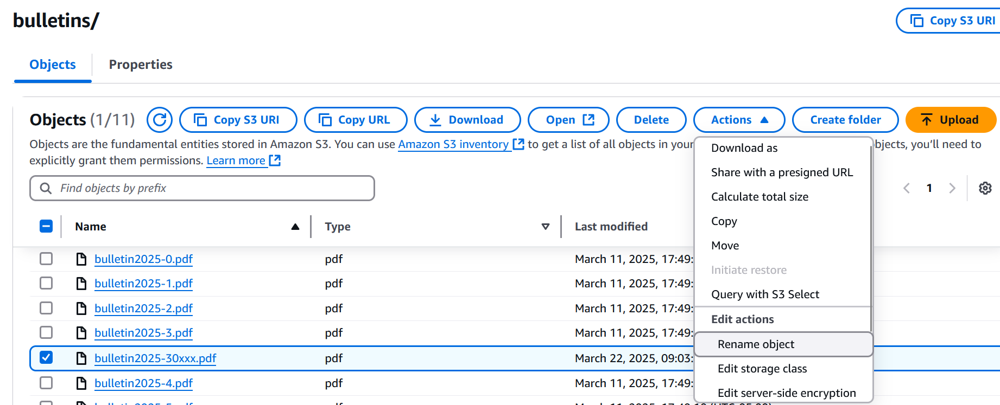

Once you are logged into AWS you will access the S3 bucket where the webiste is located.
There are a couple of ways to access S3.
If you have recently accessed S3 this service should be displayed on the landing page when you login.
You can click on the S3 link to proceed.
If you don't see the S3 service on the landing page you can enter S3 into the search field at the top
of the screen. Click on the S3 service icon.
On the S3 screen, the list of S3 buckets will be displayed. If the S3 buckets are not displayed you can click on
the "General purpose buckets" link on the left side of the page.
When bulletins are uploaded to the sjthebeloved.org website there is a naming convention that needs to be followed.
Once a bulletin PDF is uploaded to the website it will automatically appear on the
church's bulletin page if you follow the PDF file naming convention.
The bulletin naming convention is defined in the following spreadsheet. See the BulletinNaming tab of this
spreadsheet
How to Delete a PDF file from the Bulletin S3 Folder
If you want to delete a bulletin that currently resides in the S3 bulletins folder check the checkbox next to the filename. In this example, then bulletin2025-30.pdf file is to be deelted.
With the pdf file to be deleted click on the Delete button.
On the subsequent screen the file or files to be deleted will be displayed. You are also required to enter the words, "permanently delete" into the "Permanently delete objects" entry field.
Once you enter "permanently delete" into the entry field the "Delete objects" button will be enabled. Click the "Delete objects" button to delete the selected PDF file.
If all goes well, the "Successfully deleted objects" verbiage will be displayed on the screen.
How to Rename a PDF file in the Bulletin S3 Folder
If you want to rename a bulletin that currently resides in the S3 bulletins folder check the checkbox next to the filename.
In this example, the bulletin2025-30xxx.pdf file will to be renamed to bulletin2025-30.pdf.

Enter the new file name into the "New object name" entry field. Click on the "Save changes" button.
The "Successfully renamed object" message will be displayed on the screen.
The bulletin2025-30xxx.pdf file has now been successfully renamed to bulletin2025-30.pdf